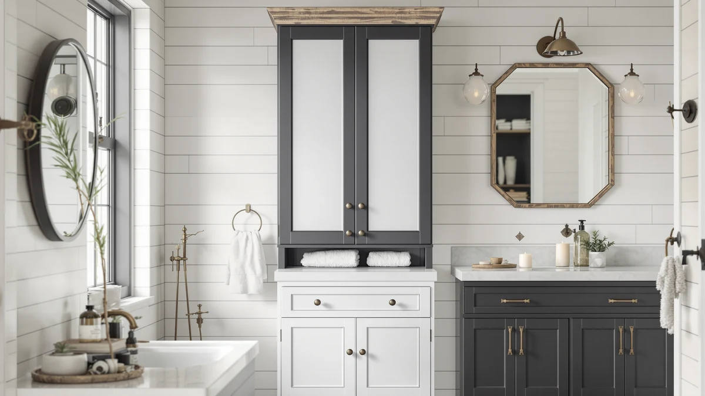

The Best Rustic Bathroom Storages (2026)
Prices and picks verified as of August 2026. Independent, reader-supported reviews.


Quick Answer
For most bathrooms, the Besti Rustic Vanity Organizer is the best rustic bathroom storage pick because its metal-and-wood frame spans a full counter and holds more daily essentials than anything else we compared. If you only need somewhere for cotton balls and bath salts, the $9.99 Amolliar mason jar set solves that gap for less than the cost of a single vanity organizer.
Our pick: Besti Rustic Vanity Organizer for, $34.95 Check Price on Amazon
Bottom line: our top pick is the Besti Rustic Vanity Organizer for Cosmetics at $34.95. The best budget option is the Amolliar Glass Mason Jar Bathroom Storage Organizer - Rustic at $9.99.
Things to Know Before You Buy
- Rustic bathroom storage covers more than one product type. The best rustic bathroom storages we found are a vanity organizer, a mason jar set, a wall-mounted hair dryer holder, a slim rolling cart, stacked baskets, a trash bag holder, and an adhesive caddy. Each one solves a different corner of bathroom clutter.
- Material sets the look. Every pick on this list pairs a black or bronze metal frame with wood or wood-tone shelving, which reads as rustic instead of industrial or purely utilitarian.
- Measure your space before you buy. A vanity organizer needs real counter depth, while a slim cart or an adhesive caddy fits gaps a bulkier piece can't.
- Small storage add-ons close the gaps a big organizer leaves. A mason jar set or a Command caddy costs around $10 and handles items too small for a full-size organizer.
- Price ranges widely across this list. You can outfit a rustic bathroom with these seven picks for anywhere from $10 to $35, depending on what you actually need to store.
The best rustic bathroom storages solve a problem that generic plastic bins don't: where to put everything in a small bathroom without breaking the farmhouse or cabin look you've built around it. Seven products stood out across the categories that matter most, a countertop organizer, a set of mason jars, a hair dryer holder, a rolling cart, stacked baskets, a trash bag holder, and a wall caddy, and each one earns its spot for a different reason. You don't need all seven to fix a cluttered bathroom, but knowing which one matches your actual layout saves you from buying the wrong shape twice.
Our pick is the Besti Rustic Vanity Organizer, a metal-and-wood unit that spans a full bathroom counter and holds more daily essentials than anything else we compared, all for $34.95. It works best in bathrooms with a wide vanity and no usable corner. If your bathroom leans smaller, or you need somewhere for cotton balls and bath salts, the $9.99 Amolliar mason jar set does that one job well without taking up counter space you don't have.
We built this list by comparing verified specs, materials, and owner feedback across dozens of rustic-style storage listings, then narrowing to the seven picks that cover the most common bathroom storage needs at a range of prices. Below, we break down what each one does best, where it falls short, and who should skip it in favor of a different pick on this list.
Why You Should Trust Us
I'm Ilane Tall, and I cover home and bathroom products for Best Bathroom Storage. I've spent years researching storage solutions for awkward bathroom layouts, where counter space, corners, and cabinet doors all have to pull double duty. For this guide to the best rustic bathroom storages, I compared seven metal-and-wood picks across price, material, and stated capacity, and I checked every listing against the manufacturer's specs before writing about it. Every product links to the exact listing we researched, so you can verify the current price and dimensions yourself.
How We Picked
We started by pulling rustic and farmhouse-style bathroom storage products sold on Amazon that combine a metal frame, usually black or bronze, with wood or wood-tone shelving. We cut anything made purely from plastic or bare bamboo, since neither holds up to the rustic look the rest of this list is built around. From there, we grouped the remaining products by the job they actually do: counter storage, loose-item storage, hair tool storage, rolling storage, basket storage, and small fixes like a trash bag holder or adhesive caddy, and kept the strongest option in each category for this list of the best rustic bathroom storages. We also cross-referenced verified owner reviews for recurring complaints about wobbling, tipping, or parts arriving damaged, and dropped any listing with a consistent pattern of those issues.
How We Compared
We compared each product's listed dimensions against typical bathroom constraints: a vanity counter depth of 20 to 22 inches, a narrow floor gap beside a toilet or washer, and the inside of a cabinet door for adhesive mounts. We cross-checked material claims, metal versus painted metal, real wood versus wood-look laminate, against manufacturer specs and product photos, since rustic finishes vary widely in how accurately they're described online. We also read through verified buyer reviews on each listing for recurring notes on stability, capacity, and durability, since that feedback matters more for this list of the best rustic bathroom storages than a single manufacturer photo does. We moved any listing with a pattern of reported wobbling, cracking, or missing hardware in verified reviews down the list, or cut it entirely.
Our Picks

Besti Rustic Vanity Organizer for
What we like
- Widest surface area of the seven picks we compared, suited to a full vanity counter
- Metal and wood build holds a full load of bottles and toiletries without flexing
- Rustic finish works as a display piece as well as storage
Flaws but not dealbreakers
- At $34.95, the most expensive pick on this list
- Takes up more counter footprint than the cart, caddy, or basket options here, so it won't fit a tight vanity
| Material | Metal / wood |
| Size | — |
The Besti Rustic Vanity Organizer is our pick because it does the one thing a mason jar set, a caddy, or a rolling cart can't: it turns a full vanity counter into organized display storage instead of a row of bottles fighting for space. Its metal frame and wood-tone shelving hold up to a full load of daily essentials without sagging, and the finish reads as intentional rustic decor rather than a garage shelf pressed into bathroom duty.
At $34.95, it costs more than every other pick on this list except the Ronjnndc hair dryer holder, and that price buys the widest surface area we compared. The tradeoff is footprint: this organizer needs real vanity counter depth, so it's not the right choice for a small pedestal-sink bathroom. In that case, the SPACELEAD storage cart or the Command caddy below make better use of a tighter space.

Amolliar Glass Mason Jar Bathroom
What we like
- Standard mouth glass jars work with lids you likely already have on hand
- Oil-rubbed bronze lids match rustic metal fixtures elsewhere in the bathroom
- At $9.99, the least expensive pick on this list
Flaws but not dealbreakers
- Holds small loose items only, not towels or bulk toiletries
- Glass jars can chip if knocked off a narrow shelf
| Material | 100% cotton |
| Size | standard mouth-Oil Rubbed Bronze |
The Amolliar Glass Mason Jar set is our runner-up because it solves a problem the vanity organizer and the storage cart don't: what to do with small, loose items like cotton balls, swabs, and bath salts that would otherwise clutter a shelf or drawer. The standard mouth jars pair with oil-rubbed bronze lids that match the black and bronze hardware common across rustic bathroom fixtures, so the set reads as decor rather than leftover kitchen jars.
At $9.99, it's the least expensive pick on this list by a wide margin, and it's the product we'd add alongside almost any of the other six picks here rather than in place of them. It won't hold towels or bulk toiletries, so pair it with the Besti organizer or the SPACELEAD cart if you need storage for anything larger than what fits in a jar.

Ronjnndc Rustic Hair Dryer Holder
What we like
- Purpose-built slots for a hair dryer, flat iron, and brush instead of a generic shelf
- Metal and wood frame matches the rest of a rustic bathroom setup
- Mounts to a wall, freeing counter space a vanity organizer would otherwise use
Flaws but not dealbreakers
- At $27.99, it only stores hair tools, not general bathroom items
- Needs open wall space near an outlet, which not every bathroom layout has
| Material | Metal / wood |
| Size | — |
The Ronjnndc Rustic Hair Dryer Holder earns a spot on this list because hair tools are one of the most common sources of bathroom counter clutter, and none of the other six picks here are built to hold them. Its metal-and-wood frame includes dedicated slots sized for a hair dryer, a flat iron, and a brush, which keeps cords and hot tools off the counter without shoving them into a drawer where they tangle.
At $27.99, it costs less than the Besti vanity organizer but more than most of the smaller storage picks on this list, and that price reflects its narrow, purpose-built job. It only works for hair tools, so it won't replace a general organizer or a basket set. It also needs open wall space near an outlet, which makes it a better fit for a larger bathroom than for a small guest bath already tight on wall room.

SPACELEAD Slim Storage Cart 3
What we like
- At 5.1 inches wide, fits gaps a full-size organizer or basket set can't
- Rolls on casters, so it's easy to pull out for cleaning or full access
- At $19.93, one of the least expensive picks on this list
Flaws but not dealbreakers
- Three narrow tiers hold less overall than the Besti organizer or the basket set
- Casters mean it can roll unexpectedly if a bathroom floor isn't level
| Material | Metal / wood |
| Size | 5.1 x 15.75 24 inches |
The SPACELEAD Slim Storage Cart is our budget pick because it solves a space problem none of the wider organizers on this list can: what to put in a gap too narrow for a normal shelf. At 5.1 by 15.75 by 24 inches, it slides into the strip of floor next to a toilet, vanity, or stacked washer and dryer, and its three tiers add storage to a footprint most bathrooms already have sitting empty.
At $19.93, it's one of the least expensive picks here, and the metal-and-wood build keeps the rustic look consistent with the rest of this list. Its narrow tiers hold less overall volume than the Besti vanity organizer or the Household Essentials basket set, so it works better as extra storage than as your only organizer. The rolling casters make it easy to pull out for cleaning, though they can also let the cart drift on an uneven floor if you don't lock or wedge it in place.

Household Essentials 1228-1 Double Basket
What we like
- Two full-size baskets hold towels or bulk items the mason jars and caddy can't
- Metal frame with wood-tone accents keeps the rustic look from the ground up
- Stacked design uses vertical space instead of spreading across the floor
Flaws but not dealbreakers
- At $27.99, it costs as much as the hair dryer holder for a simpler product
- Open baskets don't shield contents from dust the way a closed cabinet would
| Material | Metal / wood |
| Size | 2-Tier |
The Household Essentials 1228-1 Double Basket earns a spot here because it covers a job the smaller picks on this list can't: storing bulkier items like towels, extra toiletry bottles, or cleaning supplies. Its two-tier design stacks a pair of full-size baskets vertically, so it takes up floor space instead of counter space, which makes it a fit for bathrooms where the vanity is already crowded by the Besti organizer or the Ronjnndc hair dryer holder.
At $27.99, it's priced the same as the hair dryer holder, and the metal frame with wood-tone accents keeps it consistent with the rustic look running through this whole list. Because the baskets are open, they don't shield contents from dust the way a closed cabinet does, so it works best for towels and items you cycle through often rather than things you want to keep sealed away.

STWWO Large Trash Bag Holder
What we like
- Solves a specific storage gap none of the other six picks here address
- Compact 10 by 6 by 6 inch size fits beside a trash bin without crowding it
- Metal and wood build matches the rest of this list's rustic look
Flaws but not dealbreakers
- At $21.59, it only stores trash bag liners, nothing else
- Small size holds one bag size well but not a mixed stock
| Material | Metal / wood |
| Size | 1 Pack-L (10"x6"x6") |
The STWWO Large Trash Bag Holder is on this list for a narrow but real reason: every one of the other six picks here assumes you already have somewhere to put spare trash bag liners, and most bathrooms don't. At 10 by 6 by 6 inches, it sits next to a trash bin and keeps a roll of liners within reach instead of buried in a drawer or cabinet.
At $21.59, it's a small piece of this list's budget, and its metal-and-wood build keeps it visually consistent with the Ronjnndc holder and the Besti organizer nearby. It only does one job, so it's an add-on rather than a replacement for any of the larger organizers here, and it works best if you stick to one bag size rather than rotating between several.

Command Organizing Caddy 1 Caddy
What we like
- Adhesive mount works on a wall or cabinet door without drilling
- At $10.00, ties the Amolliar jar set as the least expensive pick here
- Compact 9.9 by 5.2 by 3.5 inch size fits inside a cabinet door
Flaws but not dealbreakers
- Adhesive mounts hold less weight than a screwed-in bracket
- Small size limits it to lightweight items, not bottles or heavier toiletries
| Material | Metal / wood |
| Size | 9.9 in. x 5.2 in. x 3.5 in. |
The Command Organizing Caddy rounds out this list as the pick for renters or anyone who doesn't want to drill into a bathroom wall or cabinet door. Its adhesive mount holds the compact, 9.9 by 5.2 by 3.5 inch caddy in place without hardware, which makes it a fit for a rented apartment or a cabinet door where the other metal-and-wood picks on this list wouldn't work.
At $10.00, it ties the Amolliar mason jar set as the least expensive pick here, though the adhesive mount holds less weight than the screwed-in Ronjnndc holder or the floor-standing Household Essentials baskets. Stick to lightweight items like small bottles or grooming tools rather than heavier toiletries, and it holds up well for the low-commitment, no-drilling storage job it's built for.
Quick Comparison
| Product | Material | Price | Rating | Best for | Get it |
|---|---|---|---|---|---|
| Besti Rustic Vanity Organizer for | Metal / wood | $34.95 | 4 | Wide vanity counters | View on Amazon → |
| Amolliar Glass Mason Jar Bathroom | 100% cotton | $9.99 | 4 | Small loose items | View on Amazon → |
| Ronjnndc Rustic Hair Dryer Holder | Metal / wood | $27.99 | 4 | Hair tools | View on Amazon → |
| SPACELEAD Slim Storage Cart 3 | Metal / wood | $19.93 | 4 | Narrow gaps | View on Amazon → |
| Household Essentials 1228-1 Double Basket | Metal / wood | $27.99 | 4 | Towels and bulk items | View on Amazon → |
| STWWO Large Trash Bag Holder | Metal / wood | $21.59 | 4 | Trash bag liners | View on Amazon → |
| Command Organizing Caddy 1 Caddy | Metal / wood | $10.00 | 4 | Renters, no-drill mounting | View on Amazon → |
What is the best material for rustic bathroom storage?
Look for a combination of metal framing, usually black or bronze, and wood or wood-tone shelving.
Do I need more than one rustic bathroom storage product?
Most bathrooms do better with two or three of these picks rather than one.
The Competition
We looked at plenty of plastic and acrylic bathroom storage products while researching the best rustic bathroom storages, and we ruled almost all of them out. Plastic doesn't hold up to the rustic aesthetic these seven picks are built around, and clear acrylic bins look out of place next to exposed wood and black or bronze metal fixtures. We also passed on several closed wood cabinets marketed as farmhouse style, since verified buyer reviews on those listings repeatedly flagged swelling and warping in humid bathrooms, a problem none of our seven picks share.
Bamboo-only organizers came close on looks, but bamboo alone doesn't hold up to splashes near a sink as well as the metal-framed builds in our final seven, so we left pure-bamboo units off this list. We also skipped several oversized ladder-style shelving units, since they needed more floor space than a typical bathroom has to spare and didn't add enough storage to justify the footprint compared with the SPACELEAD cart or the Household Essentials baskets. For most bathrooms, the Besti Rustic Vanity Organizer still wins on the combination of price, footprint, and capacity that makes it the best rustic bathroom storage pick on this list.
Frequently Asked Questions
What is the best material for rustic bathroom storage?
Look for a combination of metal framing, usually black or bronze, and wood or wood-tone shelving. All seven picks on this list use that combination, which holds up better to bathroom humidity than bare bamboo and looks more intentional than plastic or acrylic.
Do I need more than one rustic bathroom storage product?
Most bathrooms do better with two or three of these picks rather than one. A vanity organizer like the Besti handles counter storage, while a mason jar set or Command caddy covers the small loose items a bigger organizer leaves scattered.
How much weight can rustic bathroom storage hold?
Capacity varies by product and mount type. Adhesive picks like the Command caddy hold less than screwed-in or floor-standing options, so check the listed weight limit before loading it with heavier bottles or bulk toiletries.